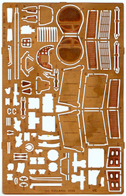
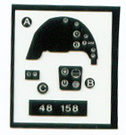

You may notice that a few items have been cut out of the sheet already … I had already started construction some time ago before deciding to review the kit (my bad). The Eduard package includes lots of nifty little PE items for the cockpit along with three different films seen to the right. Note that the PE set also includes replacement radiators and radiator doors.